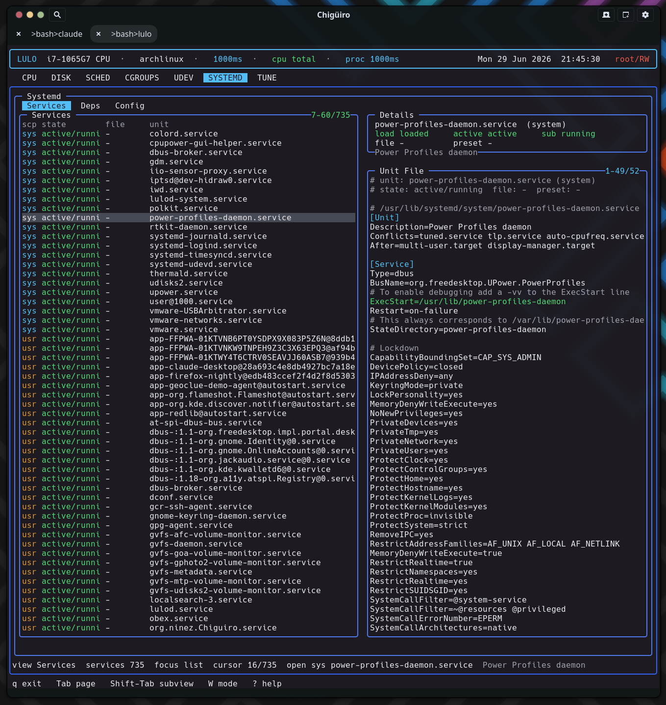

The SYSTEMD page talks to systemd the way systemd’s own tools do – over sd-bus, not by shelling out to systemctl – querying both the system and user managers, merging file-enablement with runtime state, and computing true reverse-dependency closures from the bus interface’s inverse-relation properties.
SYSTEMD is a service inspection and editing surface built for visibility first, with safe file-backed editing before any broader lifecycle management. It runs on the standard client/daemon split: a backend thread in the frontend requests a snapshot from lulod, which does the actual sd-bus work and caches the result (see Process Model & IPC).
| Subview | Purpose |
|---|---|
Services |
The merged system + user unit inventory with state and enablement |
Deps |
Reverse dependencies for the selected unit |
Config |
systemd config files and drop-ins under /etc/systemd |
The daemon links libsystemd and opens both buses – sd_bus_open_system and sd_bus_open_user – gathering each scope separately. For each manager it makes two pattern-filtered calls (the pattern restricts results to *.service):
ListUnitFilesByPatterns -> the unit file enablement state (enabled / disabled / static / …).ListUnitsByPatterns -> the runtime state: load, active, sub, description, and the unit’s D-Bus object path.The two result sets are merged per (scope, unit), unit names are \xNN-decoded back to their human form, and the list is sorted by a health rank so failed and running units float to the top, inactive ones sink.
The Services list is the merged inventory. The same list backs both Services and Deps – only the preview pane differs between them.
| Column | Meaning |
|---|---|
scp |
Scope: system (cyan) vs user (orange) |
state |
Active state / sub-state, health-colored |
file |
File enablement (enabled / disabled / static / …), colored |
unit |
Decoded unit name |
Selecting a unit previews its actual on-disk definition. The daemon resolves the unit’s object path (via LoadUnit), reads the FragmentPath, SourcePath, Following, and DropInPaths properties over the bus, and dumps each of those files – so the preview is the real fragment plus its drop-ins, not a synthesized summary.

The Deps view is the technical standout. Rather than parsing systemctl list-dependencies --reverse, it asks systemd’s Unit interface directly for the inverse of every dependency relation – reading twelve reverse-relation properties over the bus:
RequiredBy, RequisiteOf, WantedBy, BoundBy, UpheldBy, ConsistsOf, TriggeredBy, OnSuccessOf, OnFailureOf, ReloadPropagatedFrom, StopPropagatedFrom, ConflictedBy.
Each list is sorted and printed under a # <Property> header, with dependency lines colored by unit suffix (.target, .service, .socket, .timer). The result is the full reverse closure across all twelve relation types in a single pass – the answer to “what else depends on this, and how?” before you change or remove a unit.
The Config view lists .conf (and .conf.pacnew) files under /etc/systemd, scanned lazily only when you enter the view. .pacnew files – pending package-manager config updates – are highlighted in orange so you notice config that needs reconciling. Selecting a file previews its contents with key=value lines colored.
SYSTEMD uses the shared external-editor handoff exclusively – there is no inline editing. The edit path is the selected unit’s FragmentPath (in Services / Deps) or the config-row path (in Config). Pressing i opens it in $VISUAL / $EDITOR; privileged writes are committed through lulod-system’s atomic, allowlist-scoped edit protocol, so editing a unit under /etc/systemd or /usr/lib/systemd never requires the TUI itself to run as root.
The cached snapshot carries the merged rows plus three separate preview buffers – one each for the Services fragment, the Deps closure, and the Config file – so switching views does not re-fetch. The unit list refreshes on a TTL; the preview is re-rendered cheaply when the selection moves.
| What exists today | Not the main workflow yet |
|---|---|
| Browse merged system + user units | Broad start / stop / restart lifecycle from the TUI |
| Inspect reverse-dependency closures | A full systemctl replacement |
| Inspect and edit unit and config files | Enable / disable as a polished end-user flow |
unit and slice matchers source from systemd